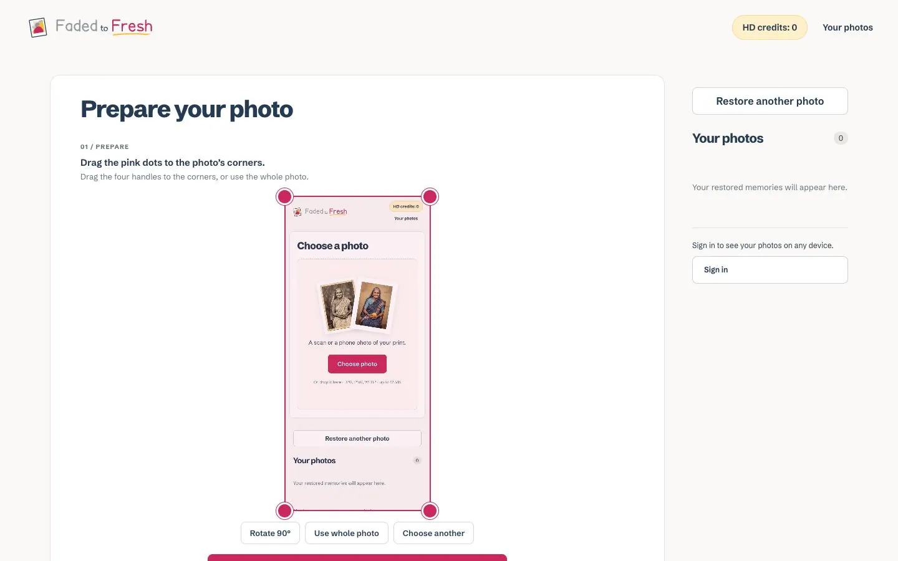
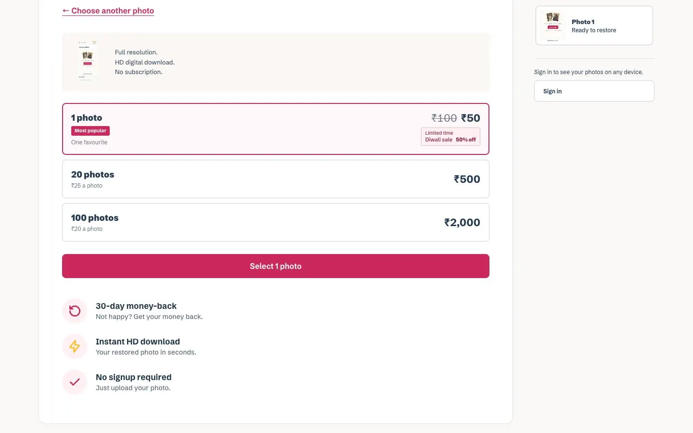

Faded to Fresh
Photo restoration web app with a crop step and one-screen checkout.
A ShaluAI web app for restoring and colourising old prints. A person uploads a scan or phone photo, crops it, picks a pack and pays to download the HD result, with no signup.
Visit fadedtofresh.shalu.ai

Design decisions
- Upload screen: one white card with a dashed drop zone. The only image is a tilted pair of polaroid prints, a faded sepia portrait and the same portrait restored in colour, which explains the product without a line of copy.
- One filled raspberry-pink 'Choose photo' button, with the formats and size limit in small grey text below ('JPG, PNG, WEBP · up to 12 MB'), so the constraints are visible before anyone uploads.
- Type and colour: Schibsted Grotesk with tight, heavy navy headings on an off-white page (#FAF9F7). The wordmark sets 'Faded' in grey and 'Fresh' in pink with a yellow underline, the before-and-after idea again in two colours.
- A right-hand column holds 'Restore another photo', a 'Your photos' list with a count and a sign-in prompt, and the header carries an 'HD credits: 0' pill. Account state is visible from the first screen without asking anyone to log in.
- Crop step: labelled '01 / PREPARE' with a one-line instruction. Four large pink handles sit on the corners of a pink-tinted frame, with Rotate 90°, Use whole photo and Choose another as outlined secondary buttons above a full-width pink primary button.
- Pack screen: three stacked tier cards. '1 photo' is preselected with a pink border and a 'Most popular' tag, its ₹100 price struck through to ₹50 beside a 'Diwali sale 50% off' badge. The bulk tiers show a per-photo price (₹25, ₹20), so the saving is clear without a comparison table.
- Below the 'Select 1 photo' button, icon rows answer the usual doubts before payment: 30-day money-back, instant HD download and no signup.
- Mobile: the card goes full width with the polaroids enlarged, and the sidebar content moves below the card.
On a phone
Faded to Fresh has a single theme, so there is one set of captures.
The flow, step by step


Further down the page